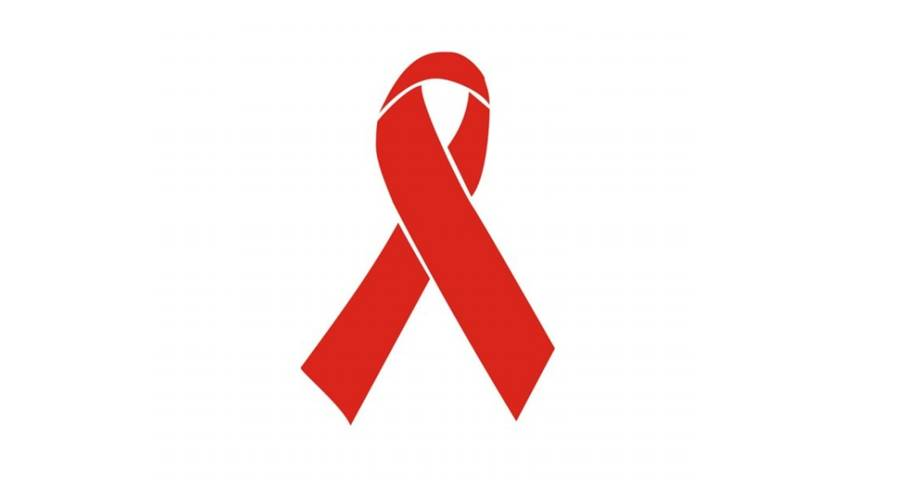
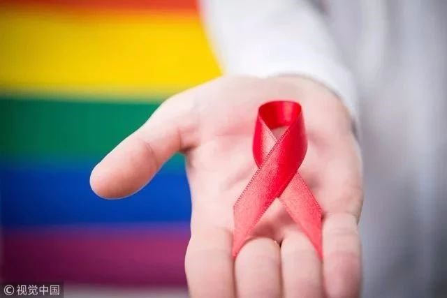

志愿者招募 | 你的参与，也许能让HIV预防性药物早日到来


如何科学预防HIV？
小瓜瓜之前只知道要正确使用安全套，万一发生了高危行为，要在第一时间服用阻断药（反正很贵就是了
不过最近，小瓜瓜接触到一个新名词——“艾滋暴露前预防（pre-exposure prophylaxis, 简称PrEP）”，简单来说，就是指没有感染艾滋病毒的人群，通过服用一些特殊的药物，来降低由于高危行为而感染的风险，从而达到预防艾滋的目的。
其实早在六年前，美国食品药管理局就已经正式核准Truvada（特鲁瓦达）的暴露前预防用药。2015年，奥巴马发布的美国未来五年《防治HIV病毒/艾滋病战略》中，也重点寄希望于这款“能够预防HIV病毒感染”的药物。
致力于防艾教育的非盈利组织Avert也在其官网指出，正确使用PrEP可以有效降低HIV感染，感染几率接近于零。
然而遗憾的是，国内目前对于艾滋暴露前预防的临床研究仍为空白……
直到最近，浙一医院HIV研究中心携手GSK，正在进行一项HIV暴露前预防药物（PrEP）的I期临床研究，在没有感染艾滋病毒的中国男性中，评价试验药物CAB的安全性和可接受性，以及CAB在体内吸收和排出的情况。
区别于Truvada日复一日的口服用药，CAB这种长效注射给药的方式不失为一种更为便捷的选择。

那么，推动HIV预防性药物在国内的普及，我们凭着一己之力，又能做些什么呢？
或许可以成为一名志愿者，参与到这次研究工作之中

研究需要志愿者做什么呢？
符合研究条件（详情见下文）后筛选入组，项目预计持续时间为89周；
入组后，首先进入28天的口服药物研究阶段（第1-4周）；
第二阶段中，在第5，9，17，25，33周需要到研究中心进行随访（第5-41周）；
第三阶段为无给药访视期（第41-89周）。
从入选到实验结束第89周随访，参与者一共需要回到研究中心17次来完成随访，随访内容包括常规医疗检查，接受研究药物，抽取研究血样样本，艾滋病毒检测等。
受试者获益评估
① 研究将向每位受试者提供一种针对HIV感染的综合预防措施，包括HIV监测和咨询，受试者可能会从HIV教育和预防活动获益
② 受试者每次访视可获得交通补助约200元，每次血样样本抽取可获得营养补助约300元；
受试者风险评估
本次同期实验已在美国FDA进入临床三期，就目前结果分析，附加风险较小。
受试者入选标准
研究参与者需为18-65岁的成年男性，具有获得HIV的风险，具体定义为在过去24个月内至少有一位随意性伴侣，且即时监测（POC）HIV测试结果为无反应，筛选时没有检测到HIV-1 RNA。
同时需满足非HIV高风险获得者，且不具有其他高风险的受试者。


！咨询&报名方式！
请直接联系浙江大学医学院附属第一医院的HIV团队（朱彪，解奕瑞，黄莺）：
0571-87236416，17764540271
地址：杭州市庆春路79号浙一医院感染科9号楼3楼307访谈室
也可以来咨询我们的志愿者（renxy1996）